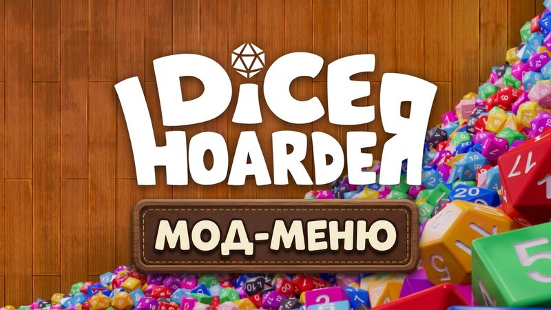

Ski-E-O! Ski Resort Tycoon
v1.0Мод-менюТаблица .CTSteam Deck
Мод-меню на русском в стиле интерфейса курорта, стартовое сохранение на 5 000 000 $ и таблица Cheat Engine на деньги, заморозку счёта, репутацию, бесплатные снегопушки и быструю камеру.
Русификаторы со шрифтами, мод-меню на русском и таблицы Cheat Engine для одиночных игр на Windows, Steam Deck и macOS.
Мод-меню на русском в стиле интерфейса курорта, стартовое сохранение на 5 000 000 $ и таблица Cheat Engine на деньги, заморозку счёта, репутацию, бесплатные снегопушки и быструю камеру.

Мод-меню на русском в стиле HUD игры, стартовое сохранение сюжетного режима на 4 уровень и таблица Cheat Engine на очки навыков, уровни, 8 навыков, выносливость, скорость и дальний захват.

Мод-меню на русском, стартовое сохранение с 10 000 000 $ и таблица Cheat Engine на деньги, золотые слитки, очки навыков, инструменты и магнит купюр.

Мод-меню на русском (.omlmod) и таблица Cheat Engine на быструю косилку, широкую деку 4.4 м, бесконечное топливо, покос участка 18x18 м и смену погоды.
Мод-меню на русском, стартовое сохранение с золотом и лагерем 10 уровня, а также таблица Cheat Engine на ресурсы стройки, быстрый бег и защиту от жары.

Мод-меню на русском, стартовое сохранение со всеми ресурсами и таблица Cheat Engine на валюты, урон курсора, неуязвимость башни и фольгированные бустеры.

Внутриигровое мод-меню с 8 настройками баланса и таблица Cheat Engine v1.1 (исправлены Души и сохранение прогресса после перезапуска).

Перевод интерфейса Playrooms95, 177 реплик скрепки Балли, телетекста и 4 шрифтов плюс сборка 2-в-1 с мод-меню и таблицей Cheat Engine.

Перевод 631 предмета, 15 скриптов, форума, реплик вИИрона и экрана 29 достижений со шрифтом Underdog плюс сборка 2-в-1 и таблица Cheat Engine.

Полный перевод сюжета, диалогов, предметов, рецептов, подписей мини-карты и заданий под патч 2.1.7.
Перевод 3 009 строк кампании, снаряжения и кооператива с пиксельным шрифтом 8x8 и гладким Tactical HUD плюс сборка 2-в-1 и таблица Cheat Engine.

Перевод кампании на 50 уровней, древа навыков и 30 достижений со всеми 5 игровыми шрифтами плюс сборка 2-в-1 с мод-меню и таблицей Cheat Engine.
По такому запросу игр пока нет.